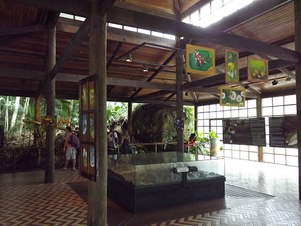
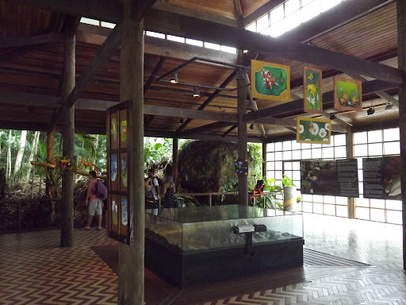

.png)
INGRESSOS
O ingresso do PARNASO passou a ser gratuito, respeitando-se o limite diário correspondente às mesmas e o controle de público é dado por ordem de chegada. Atingida a lotação máxima, os portões serão fechados e não serão reabertos
Para acesso ao parque a identificação individual é obrigatória (CPF acompanhado de documento com foto - RG, CNH ou passaporte). Permitida entrada com alimentos e bebidas não alcoólicas. NÃO é permitida a entrada de animais domésticos. Proibido churrasco, fogueira, aparelhos sonoros, garrafas e copos de vidro e uso de entorpecentes.
- Parte baixa = 1000 pessoas/dia - Bosques, cachoeiras, Poços do Castelo; 2 Irmãos; Ceci e Peri; Beija-Flor. Trilhas do Circuito Juçara; Mozart Catão; 360; Cartão Postal e Suspensa (Trilha Sunspensa - interditada) - Para pernoite em camping Jaguatirica é necessário o agendamento - clique aqui
- Parte alta = 100 pessoas/dia para bate e volta - Atrativos com acesso pela trilha da Pedra do Sino - é recomendável o uso do Kit Dejetos - Para pernoite em camping do Sino (abrigo não disponível) é necessário o agendamento - clique aqui
O QUE FAZER
CENTRO VISITANTES
PISCINA E ÁREA DE LAZER
TRILHAS
 

Salão principal / Maquete / Auditório
Entre as atrações no salão principal, estão a maquete com animação e áudio explicando as características do Parque e destacando os principais pontos na UC, reproduções de animais e computadores com apresentação multimídia e jogos temáticos e além de exposição permanente da fauna da UC (taxidermizada).
Na sala interativa é possível ouvir os cantos de aves e vocalizações de mamíferos ou aprimorar a capacidade de ver os animais na floresta.
O Centro de Visitantes conta, ainda, com cafeteria e loja de lembranças, com camisetas bordadas, livros, suprimentos para passeios no Parque e outras lembranças.


Piscina de Águas Naturais e Área de Piquenique
A Piscina de água natural é uma das mais tradicionais atrações do PARNASO. Muito procurada no verão, ela compõe um belo cenário para piqueniques e atividades recreativas no frio inverno da serra.
A trilha do Caxinguelê, cortada pelo Rio Paquequer, é um passeio leve e agradável, onde o visitante entra em contato com a natureza. Quem passa o dia no Parque não pode deixar de conhecer os bosques Santa Helena e da Colina, projetados pelo arquiteto e paisagista Ângelo Murgel, com refúgios, muita sombra, mesas e bancos de pedra para piquenique e banheiros.

Estrada da Barragem
- Nível de Dificuldade: Leve
- Extensão: 3000m
- Duração: 2 horas (ida e volta)
Estrada calçada em paralelepípedo com trânsito liberado para automóveis. É a via que dá acesso a todas as trilhas da Sede Teresópolis.
Ideal para caminhadas de lazer, tem extensão de 3 Km e placas indicativas de distância em intervalos de 500m. A estrada conta com vários mirantes, recantos para descanso, duchas e cascatas.
A estrada termina na Praça da Barragem, ponto de captação de água para a cidade de Teresópolis